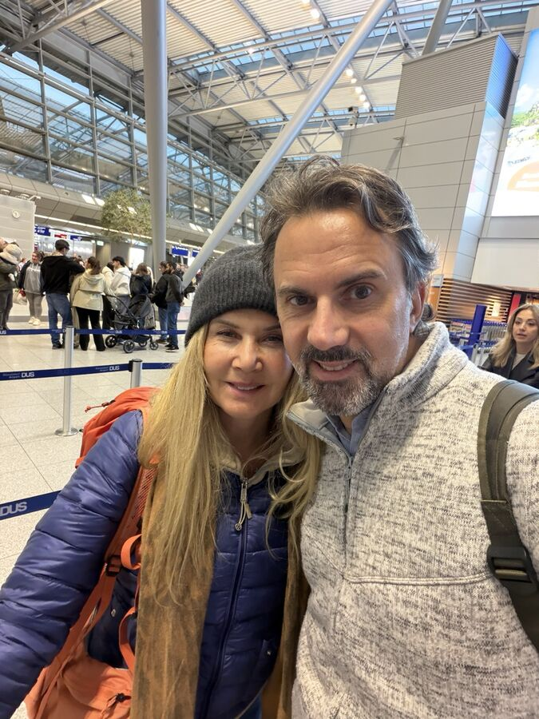
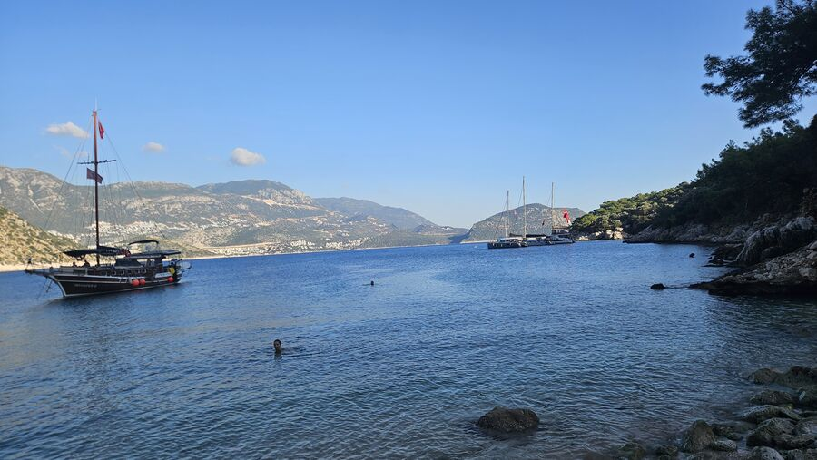
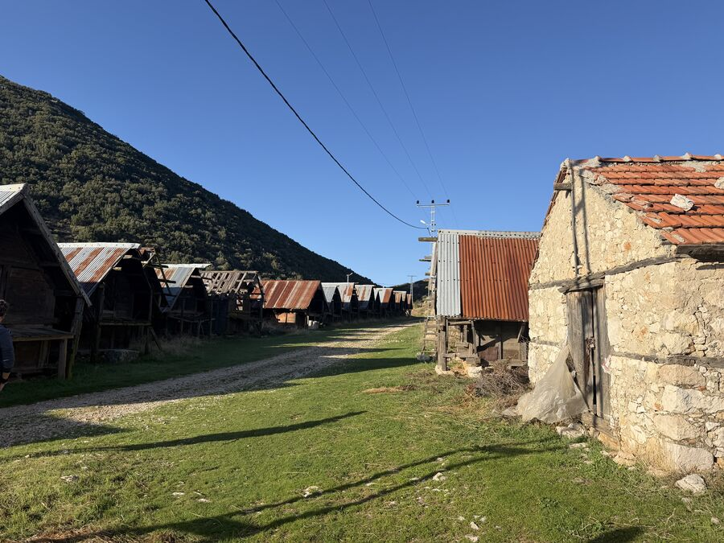
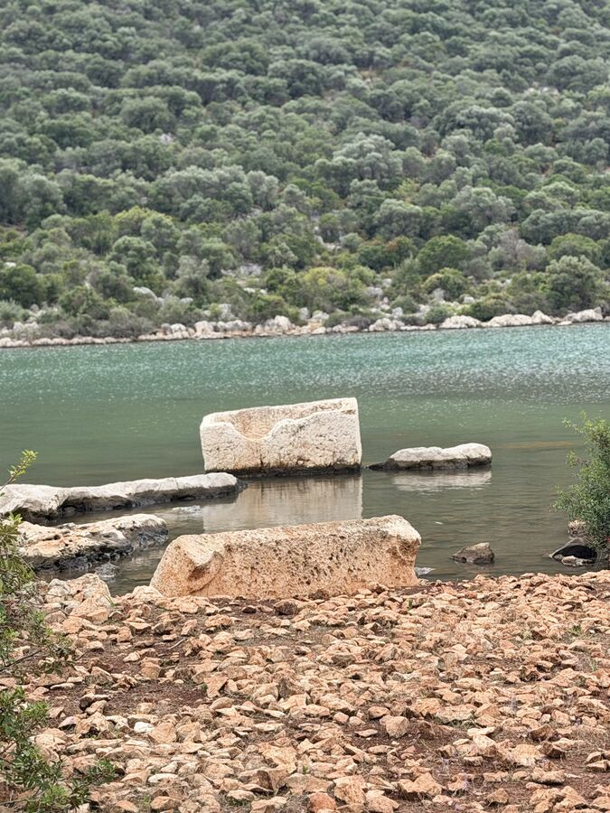
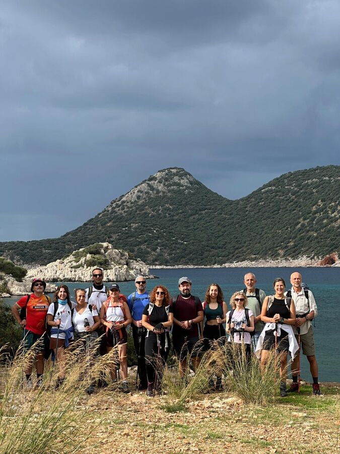
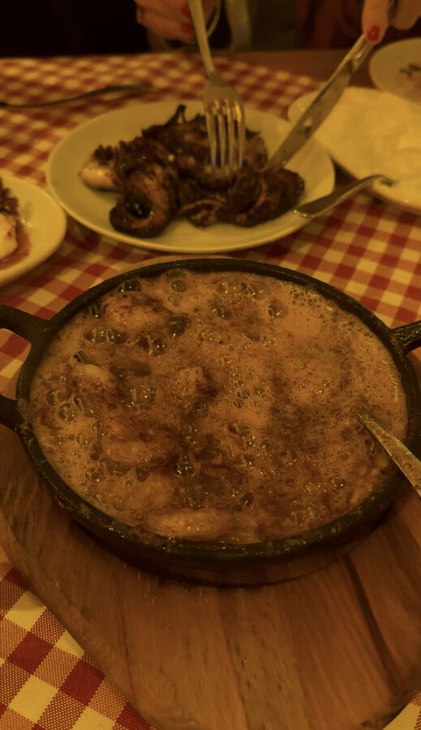

23. bis 30. Oktober 2026
Etappe 2: Von Patara über Aperlai nach Kaş
Nach holprigem Start drei Wandertage zwischen Bezirgan, Patara, Apollonia, Aperlai und Limanağzı, dazu ein Bootsausflug durch Kekova – danach Regentage in Kaş und ein Kunstabschluss in Fethiye.

Anreise
Anreise mit Hindernissen

Tag 1 der Tour
Der verpasste erste Tag

Wandertag 1
Die Getreidespeicher von Bezirgan und das antike Patara
9,54 km292 m ↑

Wandertag 2
Von Apollonia hinunter nach Aperlai – und mit dem Boot durch Kekova
7,01 km41 m ↑

Wandertag 3
Über den Çoban Plajı nach Limanağzı – und weiter nach Kaş
8,85 km265 m ↑

Kaş
Regen statt Bootstour
▲
Fethiye
Kunst zum Abschluss in Fethiye
▲
Rückblick
Heimreise und Rückblick
2025
Etappe 1
Unsere erste Lykien-Wanderung im Jahr 2025. Die Berichte dazu folgen.
▲
2025